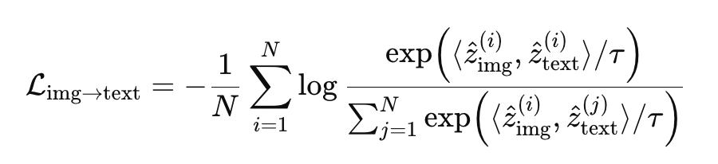
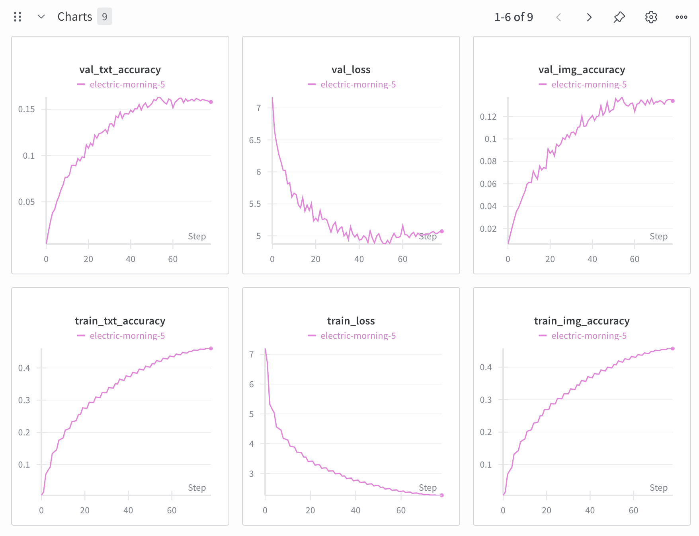

Please see the GitHub Repo.
I created a custom implementation of CLIP. I did both to explore what effect replacing a transformer with an RNN would have as the text encoder, as well as to explore how rich embeddings trained on a home GPU (Nvidia 4090) could be. TODO (these sections have not yet been written): Motivation Trying to use an RNN as the text encoder Collecting Data img2dataset, datacomp, cc3m Talk about how you couldn't use gradient accumulation. XBM queue, 2048 batch size Initial Faillures Training Zero Shot Results Use an XBM queue in the future?
When OpenAI trained CLIP, their smallest model was trained with a batch size of 32,768. In many deep learning problems, the loss function is an average of each individual sample's loss with respect to a true answer, and so to achieve a large effective batch size, it is possible to calculate loss for a smaller "micro batch" of samples and simply sum the results to calculate the loss for a larger effective batch. In CLIP however, the loss is not an average of individual samples, but rather is contrastive in nature and is thus a comparison of each pair of samples, making it less obvious how to calculate the loss for a large effective batch.
With my model and data setup, I was able to fit a 2048 sample batch size in my GPU. To try to achieve a larger effective batch size, I implemented an XBM queue of size 2048, saving the most recent embeddings in the queue so they could be appended to the 256 items in the current batch for loss calculation.
Intially when I began training with this setup, the network failed to learn, even after trying a variety of learning rates. The network only started to learn after I removed the XBM queue. It appears that having an XBM queue made it difficult for my network to learn, either due to the sheer size of the embeddings, or, more likely, because the network was not responding well to having stale embeddings in its loss function. Once I removed the XBM queue, the network started to learn, as can be seen from the wandb plots below.
While all training from this point on was done without the XBM queue, a path for further experimentation could be to gradually introduce an XBM TODO: continue and also mention MoCo.